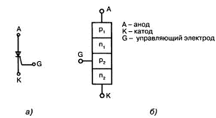
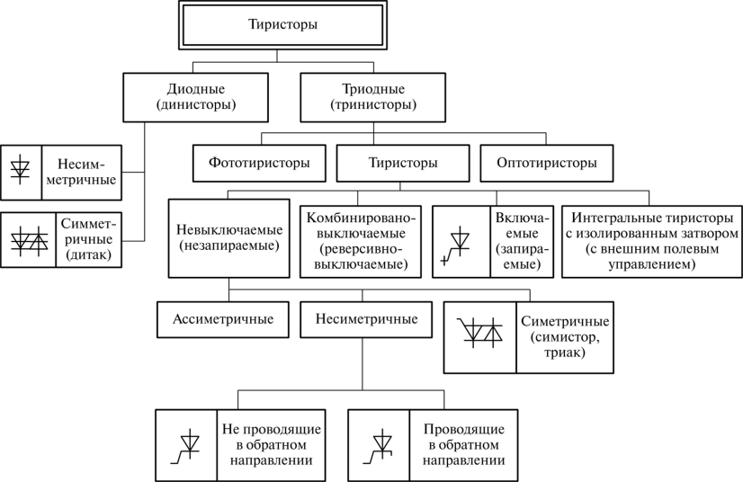

Тиристор четырёх - слойный полупроводниковый прибор, на ВАХ которого влияет участок
отрицательного
сопротивления.Назначение: применяется в управляемых выпрямителях, стабилизаторах
напряжения, в
качестве переключателей, выключателей и основных элементов
в технике автоматического регулирования.

По способу действия тиристор можно сравнить с переключателем или ключом.
Переключается тиристор при помощи напряжения, а отключается пропаданием тока
или снятием
нагрузки
Принцип работы тиристора можно представлять как ключ с электрическим
управлением
Тиристор, как правило, имеет три выхода.Один управляющий и два,через которые
протекает ток. При
подаче напряжения на управляющий выход, коммутируется цепь через анод-коллектор.
Тиристор сравним с
транзистором. Только с той разницей,
что у транзистора величина пропускаемого тока зависит от поданного на управляющий
вывод напряжения, а
тиристор либо полностью открыт, либо полностью закрыт
Классификация тиристоров.

Параметры тиристоров.
Основными параметрами тиристоров являются:
напряжение включения;
ток включения;
максимально допустимый постоянный ток в открытом состоянии;
максимально допустимое постоянное обратное напряжение;
остаточное напряжение на тиристоре;
определяемое при токе;
время включения – время, в течение которого тиристор переходит из запертого
состояния в
открытое;
время выключения – время, в течение которого тиристор переходит из
включенного состояния в
выключенное;
динамическое сопротивление в открытом состоянии;
максимально допустимая средняя рассеиваемая мощность;
постоянный отпирающий ток управляющего электрода.
Принцип работы тиристоров.
При плавном увеличении напряжения (U) на электродах (+ к А, - к К → П1 и П3 -
открыты, П2 - закрыт)
тиристор закрыт, ток мал. При достижении U , равном Uвкл, П1, П2, П3
открыты, тиристор
включается, ток резко возрастает. При уменьшении U процессы происходят
в обратном порядке и
при достижении Uвыкл тиристор выключается.
Подавая напряжением на УЭ (+ Uупр) можно изменять Uвкл. Стартовое
состояние элемента —
закрыто. «Сигналом» к переходу в состояние «открыто» является появление напряжения
между анодом и
управляющим выводом. Вернуть
тиристор в состояние «закрыто» можно двумя способами:снять нагрузку; уменьшить ток
ниже тока удержания
(одна из технических характеристик).
Работа тиристора в схемах с постоянным напряжением. После
кратковременного появления
напряжения между анодом и управляющим выводом, элемент переходит в состояние
«открыто». Далее может быть два варианта развития событий: Состояние «открыто» держится даже после того, как напряжение анод-выход
управления пропало.
Такое возможно если напряжение, поданное на анод-управляющий вывод, выше чем
неотпирающее напряжение.
Прекращается прохождение тока
через тиристор, фактически только разрывом цепи или выключением источника питания.
После
восстановления цепи, ток не течет до тех пор, пока на анод-управляющий вывод снова
не подадут
напряжение. Состояние «закрыто» после снятия напряжения.
Работа тиристора в схемах с переменным напряжением Принцип работы в
схемах переменного
напряжения существенно отличается. Возвращение в запертое состояние происходит
«автоматически» — при
падении силы тока ниже порога
удержания.
Если напряжение на анод-катод подавать постоянно, на выходе тиристора
получаем импульсы тока,
которые идут с определенной частотой. Именно так построены импульсные блоки питания.
При помощи
тиристора они преобразуют синусоиду
в импульсы.